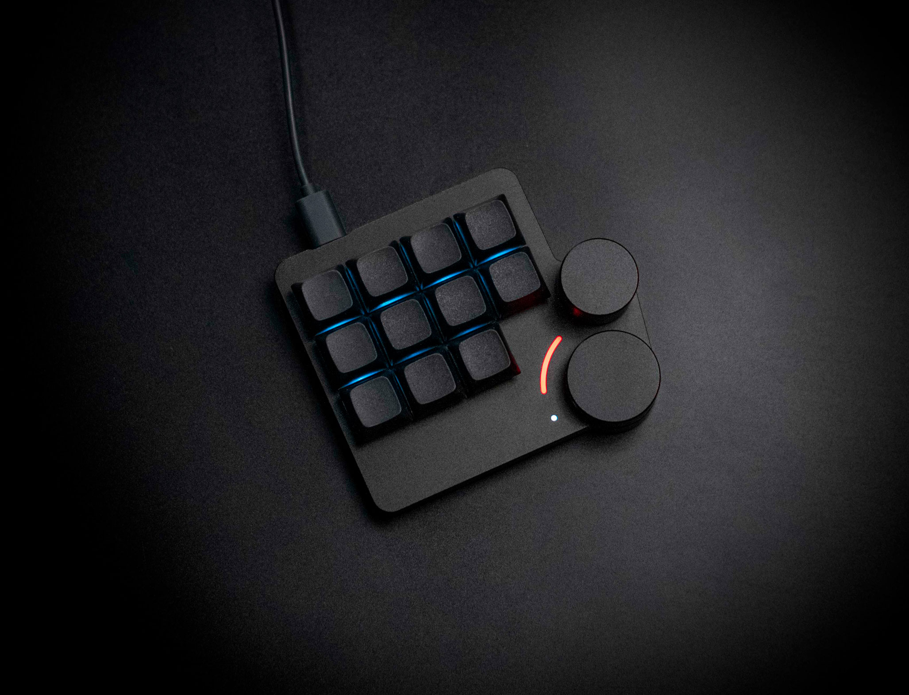
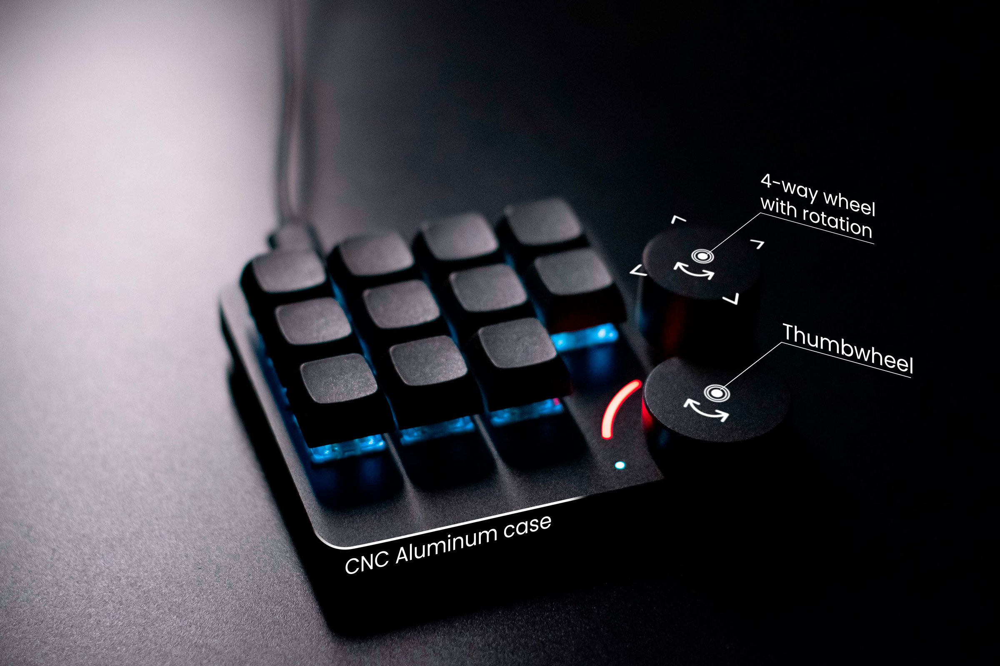

10X FASTER KEYBOARD SHORTCUTS
Enhance your workflow by executing your favorite keyboard shortcuts and macros easily with a single key.
UNIVERSAL
Lynepad can work with any software that accepts conventional keyboard shortcuts.
ACROSS THE INDUSTRIES
Our users include artists, designers, musicians, and many others. Even Excel and Flight simulator users.
INCREASED PRODUCTIVITY
Create and learn your own layout, and be more efficient in using your everyday apps.
ALUMINIUM BODY, FIRST CLASS QUALITY
Lynepad is made of high-quality and durable aluminum.

EVERY SECOND COUNTS
Use your muscle memory, and press keyboard shortcuts extremely fast. No distractions.
Thumbwheel & rotary 4-way switch
Thoughtfully placed and easy to reach in ergonomic position.
MULTILAYER FUNCIONALITY
Use macropad with up to 4 different software at a time.

NEVERENDING SUPPORT
For support and community discussions, contact us at info@qvex.eu
"The macropad I always dreamed to have. I really love It."
FAQ
- What operating systems are supported?
- Lynepad supports all major operating systems: Windows, macOS and Linux.
- Which software is Lynepad compatible with?
- Lynepad is universal. All software that accepts conventional keyboard shortcuts can be used with Lynepad. Most of the customers use Lynepad for design, photo and video editing, art software, CAD systems, etc.
- How are the keys configured?
- Lynepad utilizes a community firmware called QMK. It can be configured using the VIA web interface.
- Does Lynepad support QMK and VIA?
- Absolutely! The QMK is the preloaded firmware, no need for reflashing. VIA is also fully supported.
- Which cable type does Lynepad use?
- Lynepad uses USB Type C. The cable is not provided by default.
- What's included?
- QVEX Lynepad, Reset tool, Quickstart guide, 11 switches of your choice, 11 black XDA keycaps. (Optional) Accessories like switch puller or coiled cable.
- What is the size of Lynepad?
- 107 x 96 x 35mm & 198g